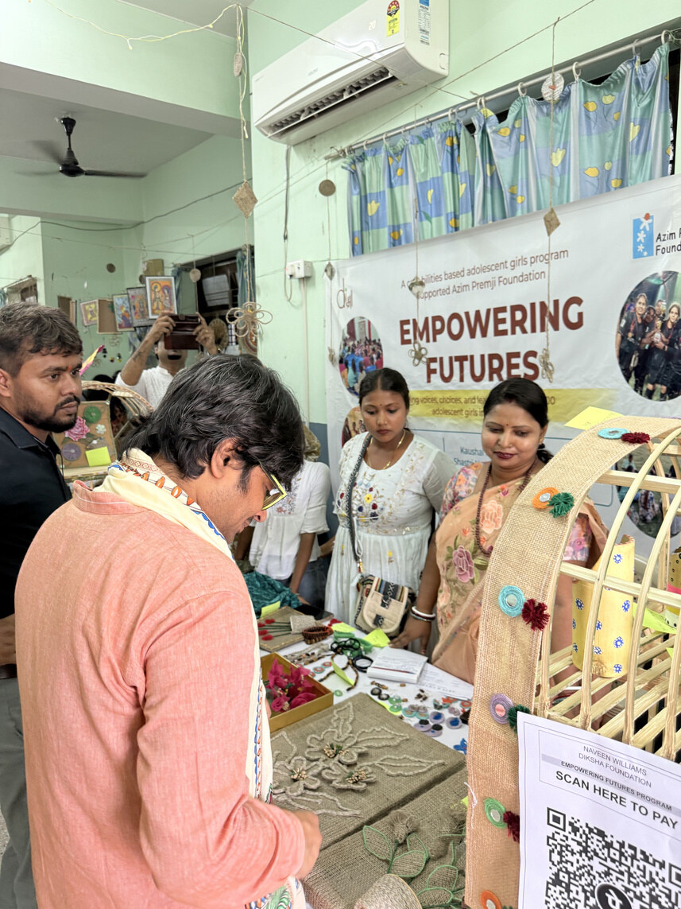
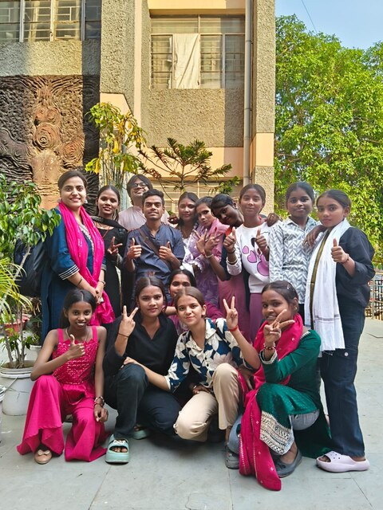
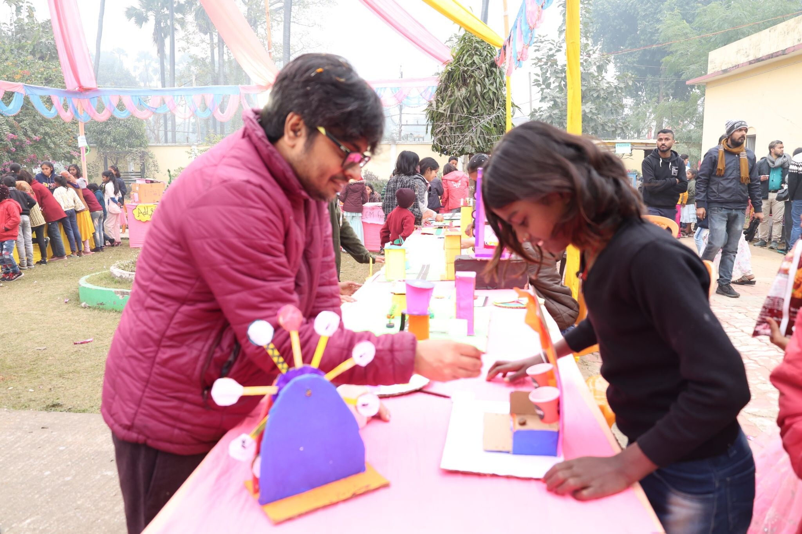
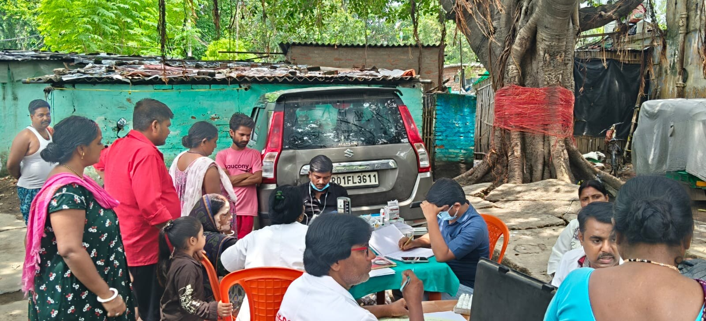
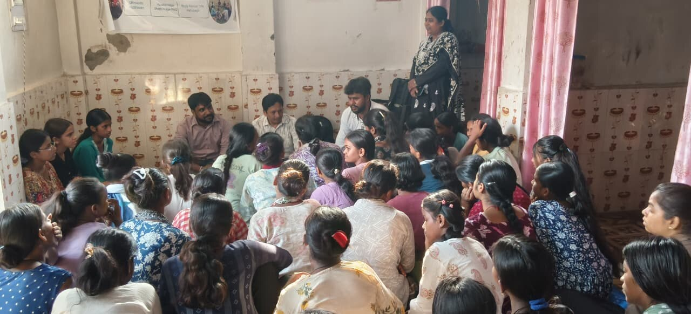

Voice, identity and decisions
Girls use conversation, journaling and role-play to understand their own experiences, express an opinion and think through choices about education and work.
Patna · Six communities · 2025–2028
Girls meet close to home, twice a week. They learn together, play, make, perform and practise making decisions for themselves.
The programme works with girls aged 13–18 in Shastri Nagar, Haj Bhawan, China Kothi, Bhola Paswan, Mahuabagh and Kaushal Nagar. Families, frontline workers and public institutions are part of the work too.
See how the programme works
The weekly rhythm
Most sessions happen close to where girls live. Regularity matters: the same group, familiar facilitators and enough time for difficult questions, shared practice and new attempts.
Girls use conversation, journaling and role-play to understand their own experiences, express an opinion and think through choices about education and work.
Sessions cover health, menstruation, body awareness, consent, child protection, cyber safety and where to seek help.
Girls learn about civil rights, scholarships, government schemes, health services and the documents and institutions involved in accessing them.
Football and other group activities make space for movement, discipline, shared responsibility and girls’ presence in public.
Making and performance let girls try a new role, shape a story, work through disagreement and explain their ideas to an audience.

The capabilities approach
The programme draws on Martha Nussbaum’s capabilities approach. Progress is not counted only in sessions attended or information delivered. It asks whether a girl has more real freedom to learn, move, speak, choose and act with other people.
Form an aspiration, consider alternatives and make a decision with better information.
Understand her body and safety, play sport and use more of the city around her.
Tell a story, perform, ask a question and speak before a group.
Build friendships, support a peer and take responsibility for a shared activity.
Approach a health service, understand a right and work through an application or referral.

Learning beyond the neighbourhood
In December 2025, 25 girls from the six communities travelled to KHEL Bihta for Matrix Mela.
They met children explaining mathematics through models and games, tried STEAM activities and encountered the history of Swami Sahajanand Saraswati at Sitaram Ashram.
Some were attending an exhibition like this for the first time. The point of an exposure visit is not the journey alone. It is the chance to see other young people build, explain and take up space.
Beyond the girls’ groups
The team stays connected with families, schools, Anganwadi centres, Urban Primary Health Centres, ASHA workers and community leaders. That wider work helps turn information into practical support.

Health and safety
Community health camps sit alongside regular sessions on body awareness, health, personal safety and knowing when and where to ask for help.

Rights and institutions
Civic education, scheme navigation and contact with frontline workers help girls and families understand which institution does what—and what to do when access is difficult.
The first year
The first phase has concentrated on trust, regular groups and visible opportunities to play, travel, make, perform and learn how institutions work.
October–December 2025
Household outreach, family meetings and peer groups begin. The programme records 260 active girls, a public launch and the first exposure visit to KHEL Bihta.
January–March 2026
Active participation reaches 280 girls. Twelve peer groups meet, sport becomes a weekly platform and baseline, PRA and institutional linkage work is completed across the six communities.
March–July 2026
Theatre, the Mitti Se craft exhibition, civic-rights sessions, community health camps and a storytelling and filmmaking workshop carry learning into public spaces.
Empowering Futures runs from 2025 to 2028 with support from Azim Premji Foundation. Education continuity, access to schemes and peer leadership will be tracked over the full three-year period.
Support Empowering Futures
Support sustains local facilitators, peer groups, sport, creative practice, exposure visits, health and rights sessions, and the work of staying connected with families and public institutions.